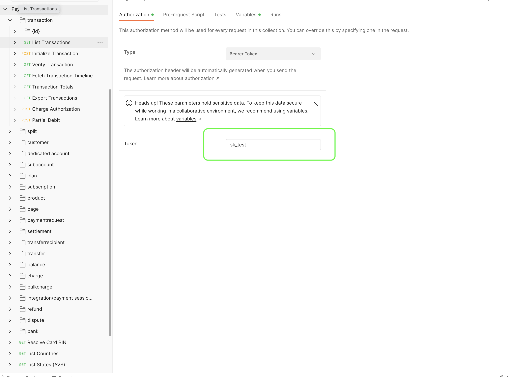

Paystack (acquired by Stripe) is an online payment processor for merchants in Africa. Founded in Nigeria in 2016, we've expanded to several markets, including Ghana, South Africa, and Kenya. Developers and startups in these markets can get paid from anyone, anywhere in the world. Coupled with our comprehensive Developer Docs and API Reference, you can explore the various Paystack APIs, from Transactions to Transfers and Account Verification to Subscriptions.
At the end of this guide, you'll have set up a Paystack Collection and made your first test payment on Paystack.
Prerequisites
- Sign up on Paystack and retrieve your Test Secret API Key. (See our guide for more information)
- Visit the Paystack public workspace.
- Open our Developer Docs and API Reference to get more detailed explanations on the APIs we'll cover.
What You'll Learn
- Fork the Paystack Collection to your workspace in Postman
- Authorize Paystack requests using environment variables
- Initialize a test transaction with Postman
- Complete a test transaction on Paystack
To get started, fork the collection from the Paystack public workspace add it to your own workspace. Forking a collection makes a copy of the collection in your workspace that you can modify. Check out this guide from Postman that explores the topic more.
Click on the three dots next to the Paystack Collection and select the Create a fork option. On the next page, you can set a label for the fork and specify what workspace it should be created in. Set the values and click Fork Collection.

In your newly forked collection, go to the Authorization tab and replace the value of the Token input with your Test Secret Key from the Paystack Dashboard. You can use environment variables in Postman to set up secret keys for different integrations. This way, you only switch the environment and your API keys change.

You're now ready to make your first API call to the Initialize Transaction endpoint. This endpoint creates a transaction on Paystack and only requires a valid email and the amount to charge. It returns a URL where you redirect the customer to pay and complete the transaction.
Note: Amounts are in the lowest currency unit. For example, kobo for naira, pesewas for cedi, and cents for rand, shillings, and dollars. For example, if you want to charge 100 rand, you'll set the amount to 10000 cents (100*100).

In this example we're only passing the email and amount, so deselect the other parameters in the Body tab. You can set your own custom transaction using the reference parameter.
Once set up, go ahead and hit the Send button to make the request.
Congratulations! You've made your first call to the Paystack API. You've initialized a transaction and now, you just need to complete it. To do that, we'll look at the JSON payload returned from Paystack.

Let's look at what each of the parameters mean:
status: A boolean value that tells you whether the request to initialize the transaction was successful or not.message: A string with a more human readable explanation of the API response and its status. If an error had occurred, this is where we would get information about what went wrong.data: An object or array with the contents of your request.authorization_url: A URL to the Paystack-hosted Checkout page for your customer to complete the transaction.access_code: A unique code for this transaction. The code can be used with the Paystack Inline library.reference: A unique transaction identifier that you can supply with each transaction you create. If you don't supply one, Paystack creates one for you.
Let's complete the transaction by opening the authorization_url in a browser. This will load the Paystack Checkout with the details provided during the initialization step above.
The Checkout loads with available payment channels based on the country the business is registered and the channels set on the dashboard.

Now that you've set up and made your first API call, go ahead and try the other APIs and the use cases on the Paystack Developer Workspace. You can also check out our Developer Docs. For starters, you can try using the Verify Transaction endpoint to see the details of the transaction you completed above.
If you have any questions, comments, or suggestions please feel free to reach us at techsupport@paystack.com. Also, you can stay up to date with Paystack by subscribing to our monthly developer newsletter here.
Happy exploring!